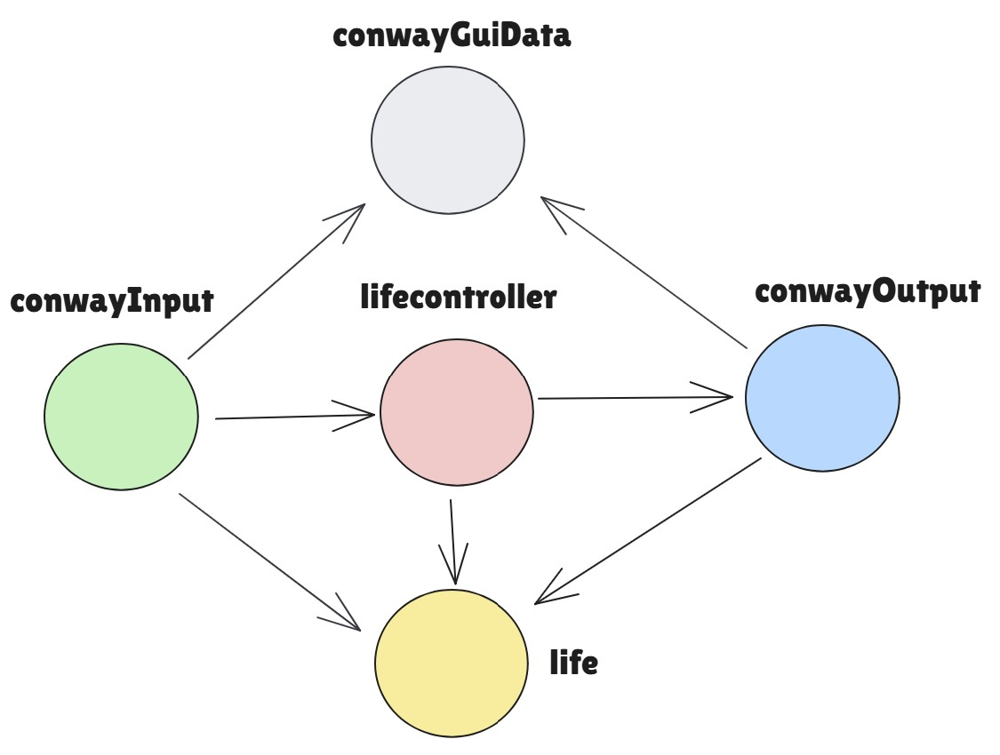
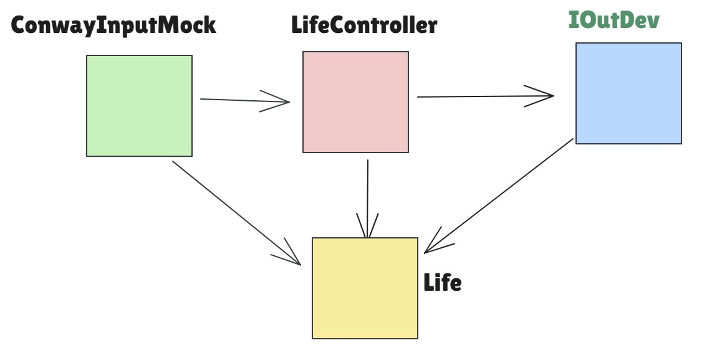
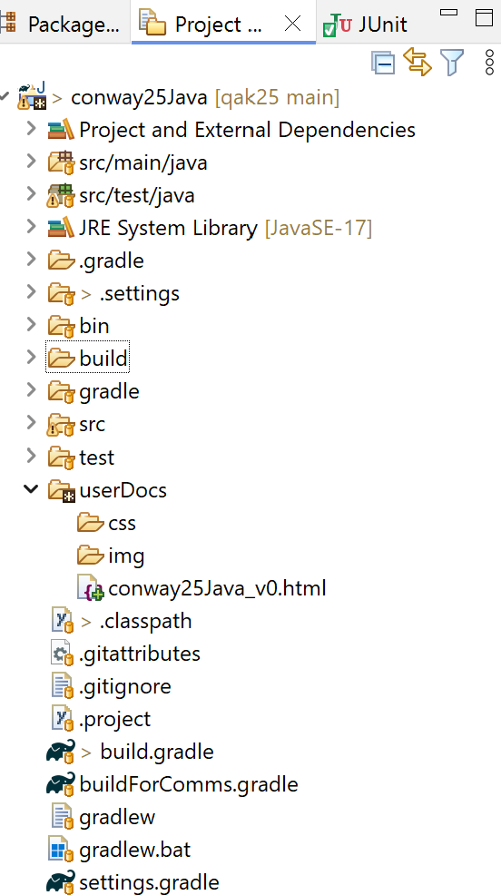
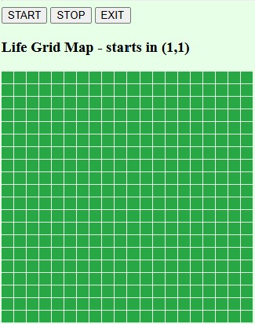
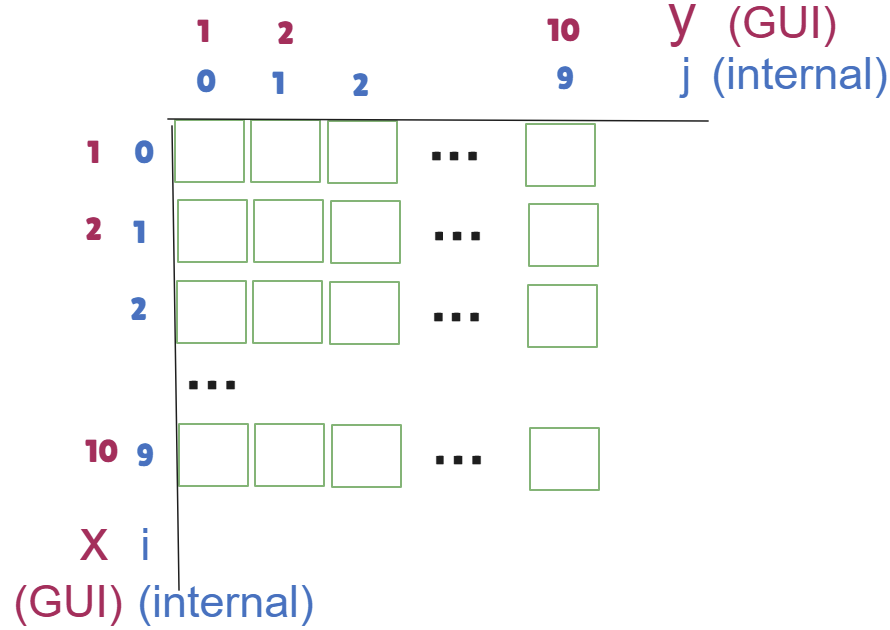
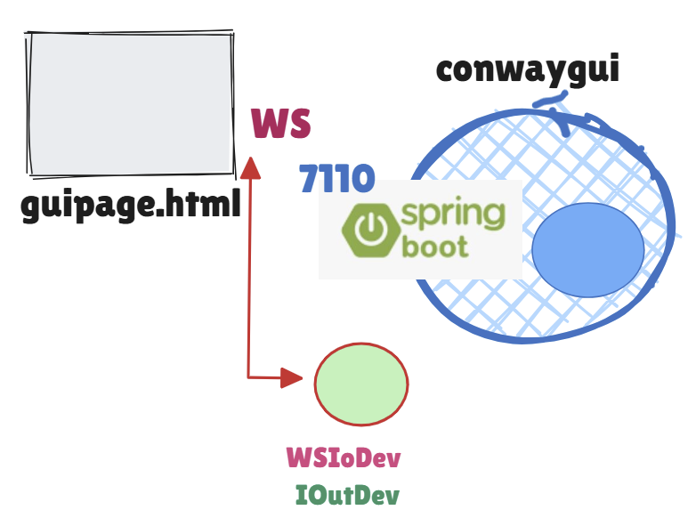
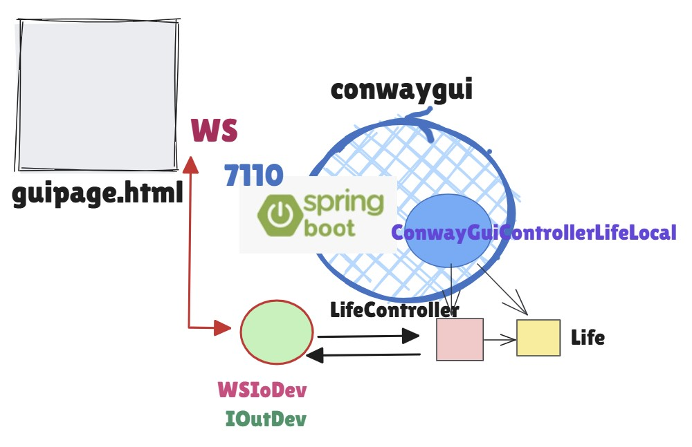
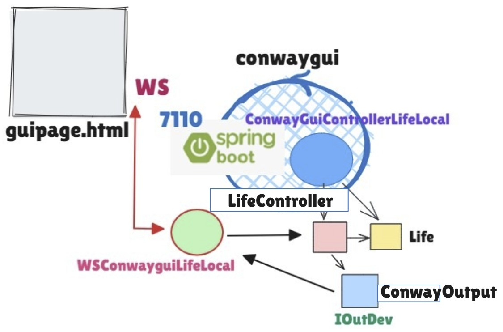

ConwayLife25¶
ConwayLife25: Obiettivi e fasi del lavoro
Parte I: da JavaScript a Java
-
conwayguialone project
Parte II: verso gli attori
Parte III: celle come attori locali
Parte IV: celle come attori distribuiti
ConwayLife25: Obiettivi e fasi del lavoro¶
Il Gioco della vita è un automa cellulare sviluppato dal matematico inglese John Horton Conway nel 1970 e costituisce un modello matematico utilizzato per studiare un Sistema Complesso.
La previsione del comportamento a lungo termine del Gioco della Vita è un problema che ha affascinato matematici e informatici per decenni e, nonostante numerosi studi, non esiste ancora una soluzione definitiva e generale, per alcuni motivi:
Complessità esponenziale: Il numero di possibili configurazioni di una griglia di celle aumenta in modo esponenziale con la dimensione della griglia stessa. Questo rende impraticabile un’analisi esaustiva di tutte le possibili evoluzioni.
- Comportamento caotico: Piccole variazioni nella configurazione iniziale possono portare a risultati
completamente diversi nel lungo periodo, rendendo difficile stabilire delle leggi generali che governino l’evoluzione del sistema.
Emergenza: Dal semplice insieme di regole del gioco emergono comportamenti complessi e imprevedibili, come la formazione di strutture stabili, oscillanti o in continua evoluzione.
Anche con una griglia finita, prevedere il comportamento a lungo termine di una configurazione iniziale rimane un problema complesso. Il numero di possibili configurazioni, anche se finito, può essere enorme, rendendo impraticabile un’analisi esaustiva.
Inoltre, a differenza di molti altri sistemi fisici, il Gioco della Vita non è sempre reversibile. Ciò significa che, data una configurazione finale, non è sempre possibile risalire univocamente alla configurazione iniziale che l’ha generata. Molte configurazioni finali possono avere più configurazioni iniziali che portano allo stesso risultato.
Dunque, determinare la configurazione iniziale che porta a una data configurazione finale nel Gioco della Vita è un problema molto complesso e, in generale, non esiste una soluzione algoritmica efficiente.
Nonostante le difficoltà, sono stati fatti numerosi progressi nella comprensione del Gioco della Vita, che includono la Classificazione delle configurazioni (still life, oscillatori, spaceship, …) e Teoremi parziali
Il Gioco della vita viene qui usato come applicazione di riferimento per realizzare un sistema software per passi successivi, introducendo ad ogni passo qualche nuova caratteristica che lo rende via via un Sistema Complicato.
Sistema Complesso¶
Molte parti con interazioni imprevedibili: Un sistema complesso è più simile a un ecosistema, dove molte entità interagiscono in modo non lineare e le loro interazioni possono portare a comportamenti emergenti e difficili da prevedere.
Difficile da ridurre a parti isolate: Le parti di un sistema complesso sono interconnesse in modo così stretto che è difficile isolarle e analizzarle singolarmente senza perdere informazioni cruciali.
Comportamento emergente: Il comportamento complessivo del sistema non può essere completamente compreso analizzando le singole parti, ma emerge dalle interazioni tra di esse.
Sistema Complicato¶
Molte parti, ma interazioni prevedibili: Un sistema complicato è come un grande puzzle con molti pezzi. Ogni pezzo ha una funzione specifica e le interazioni tra i pezzi sono ben definite e prevedibili.
Risolvibile con analisi dettagliata: Se analizziamo a fondo ogni parte di un sistema complicato e le loro interazioni, possiamo comprendere il sistema nel suo insieme e prevedere il suo comportamento.
procedere in modo usando linguaggi noti (JavaScript e Java) per realizzrae il gioco Conway Life> (si veda anche Conway Life play>);
impostare il prodotto in modo che possa ‘evolvere’ mediante aggiunte progressive di funzionalità e senza modifiche a quanto è stato già realizzato e testato richiamandosi ad alcuni Principi base della costruzione del software;
realizzare una pagina HTML che funga da dispostivo di input-ouput capace di interagire con un server via WebSocket;
trasformare il prodotto, usando SpringBoot, in un microservizio a sè stante, capace di comunicare con l’applicazione mediante scambio di messaggi usando MQTT fruibile in rete;
distribuire il prodotto come immagine Docker, così che del sistema occcorre consoscere solo la Vista esterna.
considerare la GUI come dispositivo evoluto di I/O e realizzarla come un microservizio a sè stante, capace di comunicare con l’applicazione mediante scambio di messaggi usando MQTT e opportune (da noi definite).
reimpostare l’applicazione Java come un agente (o meglio, un attore) intrinsecamente capace di interagire con il mondo esterno mediante scambio di messaggi, senza dover ricorrere a SpringBoot
introdurre Il linguaggio custom qak (un esempio di DSL) per la definizione di attori e per la loro interazione
il sistema viene impostato come un modello espresso mediante Il linguaggio custom qak
il sistema viene costruito usando
Ncomputer fisici, su ciacuno dei quali attivare una cellal’uso di un linguaggio di modellazione agevola il refactoring del sistema in quanto ‘nasconde’ i dettagli di implementazione del sistema e permette di concentrarsi sulle interazioni ‘ad alto livello’ tra le parti del sistema
ConwayLife25: il core e la griglia¶
Il punto di partenza è il ‘cuore’ del gioco, cioè la logica di calcolo delle celle vive e morte. Per questo calcolo è essenziale il concetto di stato di una cella e il concetto di vicinato di una cella.
Lo stato di una cella può essere vivo o morto e viene modificato in base al numero di celle vive nel suo vicinato, secondo le seguenti :
Una cella viva con meno di due celle vive adiacenti muore (per isolamento).
Una cella viva con due o tre celle vive adiacenti sopravvive alla generazione successiva.
Una cella viva con più di tre celle vive adiacenti muore (per sovrappopolazione).
Una cella morta con esattamente tre celle vive adiacenti diventa una cella viva (per riproduzione).
L’insieme delle celle forma concettualmente una griglia bidimensionale infinita, ma per ovvie ragioni, noi faremo riferimento a una griglia finita di dimensione
NxN, con3<=N<=10.In una griglia infinita, il vicinato di una cella è costituito dalle
8celle adiacenti (orizzontali, verticali e diagonali). Nel nostro caso di griglia finita, il vicinato di una cella potrebbe avere anche solo (ai bordi)3o5celle.In una prima fase, partiremo rappresentateremo la griglia come una matrice
NxNdi celle. Il vicinato di una cella può essere stabilito in base agli indici della componente della matrice che rappresenta la cella.In una seconda fase, la rappresentazione matriciale sarà usata solo per la rappresemtazione esterna della griglia (in una pagina HTML) mentre che scambia informazioni con le altre celle mediante scambio di messagggi.
ConwayLife25 in JavaScript¶
: realizzazione in JavaScript,
che permette la visualizzazione e il controllo della griglia all’interno in una pagina HTML
senza l’uso di alcun server.
La pagina propone anche pulsanti per avviare, fermare e terminare il gioco ed è organizzata come un
insieme di funzioni raggruppate in diversi file:
|  |
|
Principi di riferimento:
(Singola responsabulità): ogni file javascript si occupa di un aspetto specifico del sistema.
: la logica del gioco life.js non si occupa dell’I/O, ma offre funzioni utili per l’I/O.
conway.html¶
<html>
<head>
<meta charset = "UTF-8" />
<title>The Game of Life</title>
<link rel="stylesheet" href="life.css">
</head>
<body>
<!-- sezione di OUTPUT -->
<div id="gridContainer">
</div>
<!-- sezione di INPUT -->
<div class="controls">
<button id="start">Start</button>
<button id="clear">Clear</button>
</div>
</body>
<script src="conwayGuiData.js"></script>
<script src="life.js"></script> <!-- logica del gioco -->
<script src="lifecontroller.js"></script> <!-- configurazione e controllo -->
<script src="conwayInput.js"></script>
<script src="conwayOutput.js"></script>
</html>
conway25JavaScript project¶
Costruzione del progetto |
|
Esecuzione del prodotto |
Apertura del file conway.html in un browser |
ConwayLife25 in Java¶
: realizzazione in Java di classi che svolgono i ruoli dei file della soluzione JavaScript. Le dipendenze tra le classi sono visualizzate nel diagramma seguente:
|  |
|
Principi di riferimento:
I files sorgente sono che riflettono diversi ruoli logici
La IOutDev interface è definita nel package della logica applicativa, come un che i dispositivi di Output devono rispettare implementando in modo opportuno il metodo per visualizzare una cella.
La classe ConwayInputMock.java viene introdotta per definire un (Mock object), rimandando la costruzione di un componente di input più evoluto ad una fase successiva.
: per la costruzione del progetto: si veda gradle-tutorial e Creazione progetto con Gradle
IOutDev interface¶
public interface IOutDev {
public void displayCell(String msg);
}
In questa versione, la visualizzazione delle celle è fatta su System.out dal componente ConwayOutput.
Nel seguito, introdurremo modi pìù evoluti per visualizzare le celle, ma senza modificare la struttura del sistema e con ridotte modifiche al codice della classi.
conway25Java project¶
|  | Inizializzazione
Parte applicativa
Settaggio filtri per redere visibili resources e Gradle build folder |
Esecuzione del prodotto |
|
build.gradle e Main di conway25Java¶
plugins {
id 'java'
id 'eclipse'
}
version '1.0'
java {
toolchain.languageVersion.set(
JavaLanguageVersion.of(17))
}
repositories {
mavenCentral()
flatDir { dirs '../unibolibs' }
}
sourceSets {
main {
java {
srcDirs = ['src/main/java']
}
resources {
srcDirs = ['src/main/resources']
}
}
test {
java {
srcDirs = ['src/test/java']
}
resources {
srcDirs = ['src/test/resources']
}
}
}
dependencies {
testImplementation 'junit:junit:4.13.2'
}
task run(type: JavaExec){
classpath = sourceSets.main.runtimeClasspath
mainClass = "conway.MainConway"
}
jar {
println("building jar")
from sourceSets.main.allSource
manifest {
attributes 'Main-Class':'src/main/java/conway.MainConway'
}
} |
Si veda Creazione progetto con Gradle In questa versione vi sono dipendenze solo relative alla libreria JUnit per il Testing public class MainConway {
public static void main(String[] args) {
//configureTheSystem
Life life =
new Life( 3,3 );
LifeController cc =
new LifeController(life);
ConwayInputMock cim =
new ConwayInputMock(cc,life);
//start the system
cim.simulateUserControl();
}
}
|
conway25Java testing¶
Per il Testing, eseguire:
gradlew teste aprire il filebuild\reports\tests\test\index.htmlper vedere il risultato del testgradlew runper vedere il risultato dell’esecuzione del programma
conway25Java refactoring¶
Il sistema realizzato funziona, ma non ha una rappresentazione esplicita della , che costuisce l’elemento fondamentale del gioco.
Infatti il sistema definisce, in Life.java, una matrice grid di interi
che non fa riferimento alla cella, ma a un valore intero,
che deve essere vincolato (senza alcun controllo in merito) ai valori
0 (cella morta) e 1 (cella viva).
Manca dunque una opportuna applicativo`.
Il lettore è invitato:
a introdurre una per rappresentare il concetto di cella e a modificare il codice in modo da usare questa classe
ad di quale componente deve avere la lo stato di una cella
ConwayLife25 una GUI per Java¶
: realizzazione di una pagina HTML che funga da dispostivo di input-ouput
evoluto per l’applicazione ConwayLife25 in Java .
|   | La pagina HTML svolge il ruolo di:
I files relativi alla sua realizazione sono:
|
conwaygui: analisi del problema¶
Per affrontare l’analisi del problema, introduciamo opportune domande. Ad esempio:
Il requisito indica che la GUI deve essere una pagina HTML che dovrebbe essere fornita da un
Web-server e che quindi potrebbe essere aperta da più utenti contemporaneamente.
. Nel caso di più utenti, questi potranno vedere la stessa griglia o ognuno vedrà la sua griglia?
il committente precisa che tutti gli utenti potranno vedere la evoluzione della stessa griglia, ma solo uno potrà inviare comandi di gestione del gioco. Questo utente privilegiato (detto ) sarà l’utente che ha aperto per primo la pagina HTML.
Si modifica ConwayLife25 in Java o è meglio lasciare il più possibile inalterato questo software già testato?
meglio ciò che già funziona. ConwayLife25 in Java è stato impostato in modo da essere estendibile senza dover modificare la logica del gioco. In particolare, la parte di output della GUI potrebbe essere aggiornata introducendo una nuova classe che implementa la IOutDev interface in modo da visualizzare lo stato delle celle nella pagina
HTML.vi sono che permettono di realizzare pagine HTML che interagiscono con un server senza dover modificare il software già realizzato in Java. Uno di questi è SpringBoot.
La pagina HTML deve essere aggiornata in modo automatico o l’utente deve premere un pulsante per vedere lo stato delle celle?
la pagina HTML deve essere (per tutti gli utenti connessi) durante la evoluzione del gioco, senza che un utente debba fare nulla. Questo richiede l’uso di WebSocket che permettono di inviare messaggi dal server alla pagina HTML.
La pagina HTML potrebbe diventare vuota o rimanere stabile. Come evitare che il gico continui senza che l’utente se ne accorga?
il traffico di rete può essere ridotto inviando solo le informazioni necessarie per aggiornare la pagina HTML. Ad esempio, inviare e non tutta la griglia.
tuttavia, un utente che si collega mentre il gioco è in corso dovrebbe vedere lo stato attuale della griglia in modo corretto. Questo richiede che il server invii al nuovo utente tutta la griglia attuale.
conwaygui project¶
Costruzione del progetto conoscere quanto riportato in SpringBootInit25 e l’uso di https://start.spring.io/. verificare la presenza della directory nella directory di lavoro ISS2025, e, se non presente, crearla e copiarvi dentro le librerie necessarie |
Inizializzazione
Parte applicativa
Parte Spring
|
Esecuzione del prodotto |
|
: per la costruzione del progetto: si veda gradle-tutorial e Creazione progetto con Gradle
: per costruire l’applicazione Web iniziando da SpringBootInit25 e SpringBootInit25#SpringBootWebSocket
: intensivamente usate da SpringBoot, introdotte in Annotazioni
: protocollo full-duplex su TCP, introdotto in Websocket
JavaScript
Docker
conwaygui build.gradle¶
build.gradle NUOVA VERSIONE Si noti:
|
Le librerie UNIBO
L’applicazione ConwayguiApplication.java può essere lanciata da Eclipse e non solo con gradlew bootrun |
conwaygui logback.xml¶
Si noti:
il file logback.xml nella directory src/main/resources, configurato per scrivere i log su file
eliminando il file si manifetstano messaggi di log sulla console
lasciando il file si possono vedere i log sul file conwaygui/logs/conwaygui.log
guipage.html¶
<!DOCTYPE html>
<html xmlns:th="http://www.thymeleaf.org">
<head><title>Welcome</title></head>
<link rel="stylesheet" href="mapstyle.css">
<script src="commsocket.js"></script>
<script src="outarea.js"></script>
<body>
<h1>Welcome to the conwaygui</h1>
<p>Application name=
<b><span th:text="${arg}">Still unknown</span></b>.</p>
<hr/>
<!-- INPUT AREA-->
<button onClick="sendCmdToServer('start'); return false">START</button>
<button onClick="sendCmdToServer('stop'); return false">STOP</button>
<button onClick="sendCmdToServer('clear'); return false">CLEAR</button>
<button onClick="sendCmdToServer('exit'); return false">EXIT</button>
<!-- OUTPUT AREA -->
<ol id="msgslist"></ol>
<!-- MAP AREA -->
<div >
<h3 class="text-center">Life Grid Map - starts in (1,1)</h3>
<div id="map" class="grid"></div>
</div>
<script src="buttoninput.js"></script>
<script src="iomap.js"></script>
</body>
</html>
|
Il file si trova in
Si veda:
|
commsocket.js file¶
file: commsocket.js Contiene le funzioni che creano la web socket di comunicazione con il server e la trasmissione-ricezione di messaggi.  |
Funzioni:
|
aggiornare la GUI¶
Funzione che gestisce i messaggi ricevuti dalla GUI.
function handleWsMessage(event){
const message = event.data;
if (message.startsWith("cell(")) {
// Estrae la posizione e il colore
const [_, x, y, v] =
message.match(/cell\((\d+),(\d+),([^)]+)\)/);
pdateCellColor(parseInt(x), parseInt(y), parseInt(v));
}else addItem(message);
}
|
|
iomap.js¶
file: iomap.js Contiene le funzioni che creano e gestiscono la rappresentazione
della celle in forma di matricce |
Funzioni:
|
outarea.js¶
outarea addItem¶
File: outarea.js Contiene le funzioni che gestiscono l’OUTPUT AREA ( |
Funzioni:
|
ConwayLife25: un microservizio Java¶
A questo punto, inseriamo il codice delll’applicazione ConwayLife25 in Java entro
il package conway
e usiamo le WebSocket come strumento per l’aggiornamento
dinamico della pagina HTML (output) e come strumento per l’invio di comandi (input) all’applicazione Java.
conwaygui: un processo di sviluppo¶
Definizione del software relativo al core-business applicativo (con Cell e Grid) e suo testing
Definizione di un progetto SpringBoot partendo da Primi passi con SpringBoot
Directory userDocs con diario di bordo
conwaygui_v0.htmldanel package
conway(o implicito, con un file jar) del core-bsuiness Java nel workspace del progettoDefinizione del Controller della GUI ConwayGuiControllerLifeLocal con funzione getserverip che restituisce l’IP del server
Definizione della pagina HTML guipage.html
Definizione del codice JavaScript da inserire nella pagina HTML per la costruzione della mappa
Definizione lato client (commsocket.js) e lato server (WSIoDev) della interazione via WebSocket
Definizione del dispositivo ConwayOutput che invia dati via WebSocket
Codice embedded del servizio¶
Il codice Java inserito come parte integrante del servizio:
ha la stessa struttura introdotta in ConwayLife25 in Java ma con un diverso LifeController
la classe Life non ha il compito di visualizzare le celle, compito assunto dal ConwayGuiControllerLifeLocal
elimina ogni dispositivo di input, in quanto i comandi-utente vengono inviati tramite WebSocket
definisce un dispositivo di output WSIoDev che implementa IOutDev interface inviando messaggi alla pagina HTML tramite WebSocket
In questo modo abbiamo un primo microservizio.

ConwayGuiControllerLifeLocal: il controller SpringBoot
Life: esegue la logica del gioco, come in precedenza
LifeController: definisce funzioni per il controllo logico del gioco
WSIoDev: Estende AbstractWebSocketHandler di org.springframework.web.socket.handler.
Questo microservizio è l’evoluzione di una versione mostrata in precedenza:
 Il codice di questa versione si trova in conwayguiv0.
Il LifeController di questa versione include una funzione
public void elabMsg(String message)che nella nuova versione è di pertinenza di WSIoDev.
ConwayGuiControllerLifeLocal¶
ConwayGuiControllerLifeLocal :
un controller SpringBoot che si occupa di gestire le richieste HTTP
fornisce la pagina HTML
definisce la funzione
getserveripper dare un servizio che fornisve l’indirizzo IP del server su rete locale e anche il suo indirizzo IP pubblico
La funzione getserverip è invocabile via HTTP con IPADDR:7110/getserverip
e viene utilizzata dalla funzione discoverServiceUrl in commsocket.js
che fissa, al caricamanto della pagina HTML,
l’indirizzo IPADDR del server.
In questo modo, la pagina HTML può inviare messaggi al server tramite WebSocket.
LifeController¶
Il LifeController:
definisce funzioni per il controllo del gioco (come
play,startTheGame, etc.)viene chiamato da WSIoDev quando questi riceve un comando da un utente
invoca le funzioni di Life per eseguire le operazioni richieste
invoca le funzioni di output di WSIoDev per visualizzare lo stato delle celle o inviare messaggi alla pagina HTML
WSIoDev¶
WSIoDev opera come un dispositivo di I/O. Come :
implementa IOutDev inviando informazioni su tutti i client connessi alla WbeSocket.
Come :
riceve i messaggi ricevuti sulla WebSocket, converte il contenuto informativo in accordo alle regole della business logigc, e invoca LifeController per la loro elaborazione
conwaygui: ulteriore analisi del problema¶
. La parte di ‘core business’ scritta in Java non si occupa di controllare gli accessi, lasciando questa responsabilità alla GUI (WSIoDev parte input).
il controllo di chi può controllare il gioco ricade nel tema ampio di requisiti di sicurezza e questi requisiti essere considerati parte integrante dei requisiti del gioco.
conwaygui service deployment¶
Il deployment del servizio può avvenire mediante una che può essere creata ed eseguita con i seguenti comandi (si veda anche IntroDocker):
|
permette di costruire una immagine Docker che denominiamo |
Posizionarsi sulla directory che contiene il file gradle DistTar // crea la distribuzione
docker build -t conwayguilifelocal:2.0 .
|
Eseguiamo l’immagine creando un nuovo container |
docker run -it --rm --name conwayguilife -p7110:7110
--env "HOST_IP=192.168.1.132"
conwayguilifelocal:2.0
|
|
Un file Docker Compose che semplifica la creazione e l’esecuzione di più container Docker. |
docker-compose -f conwaygui.yaml -p conwaygui up
|
Spiegazione del funzionamento¶
Chiesto a Gemini:
Ho messo un server SpringBoot sulla porta 7110 entro un container docker che gira su PC-1 di IP=xxx. Poi attivo un browser su PC-1 e faccio “localhost:7110”. Quando la ‘HttpServletRequest r’ arriva al server questi invoca ‘r..getLocalAddr()’ che vale 172.25.0.2 e ‘r..geRemoteAddr()’ che vale 172.25.0..1 . Sulla stessa rete locale di PC-1 ho un PC-2 di IP=yyy che chiama il server con “xxx:7110” e ottengo gli stessi dati di prima. Vorrei capire meglio come si generano questi dati
Certo, cerchiamo di capire meglio come si generano questi dati quando usi Docker e Spring Boot.
1. Docker e la rete bridge:¶
Rete predefinita:
Quando avvii un container Docker senza specificare una rete personalizzata, Docker utilizza una rete bridge predefinita.
Questa rete bridge crea un’interfaccia di rete virtuale per il container, isolandolo dalla rete dell’host.
Indirizzi IP:
Docker assegna indirizzi IP interni ai container all’interno di questa rete bridge.
Questi indirizzi IP sono generalmente nel range 172.17.0.0/16 (o un range simile), ma possono variare a seconda della configurazione di Docker.
NAT (Network Address Translation):
Docker utilizza NAT per mappare le porte del container alle porte dell’host.
Quando una richiesta arriva alla porta dell’host, Docker la inoltra al container sulla porta corrispondente.
2. r.getLocalAddr() e r.getRemoteAddr():¶
r.getLocalAddr():
Questo metodo restituisce l’indirizzo IP dell’interfaccia di rete locale su cui il server ha ricevuto la richiesta.
Nel tuo caso, poiché il server è in esecuzione all’interno di un container Docker, r.getLocalAddr() restituisce l’indirizzo IP dell’interfaccia di rete virtuale del container (172.25.0.2).
r.getRemoteAddr():
Questo metodo restituisce l’indirizzo IP del client che ha inviato la richiesta.
Quando accedi al server da localhost:7110 o xxx:7110, la richiesta passa attraverso il NAT di Docker.
Di conseguenza, r.getRemoteAddr() restituisce l’indirizzo IP dell’interfaccia di rete virtuale del gateway Docker (172.25.0.1).
3. Perché ottieni gli stessi dati su PC-1 e PC-2:¶
NAT di Docker:
Indipendentemente dal fatto che tu acceda al server da localhost o dall’indirizzo IP dell’host (xxx), la richiesta passa sempre attraverso il NAT di Docker.
Questo significa che dal punto di vista del container, l’origine della richiesta è sempre il gateway Docker.
Isolamento della rete:
La rete bridge di Docker isola il container dalla rete dell’host.
Questo significa che il container non vede direttamente l’indirizzo IP del client originale (PC-1 o PC-2).
4. Come ottenere l’indirizzo IP del client originale:¶
Intestazione X-Forwarded-For:
Se utilizzi un proxy o un load balancer davanti al tuo container Docker, puoi configurarlo per inoltrare l’indirizzo IP del client originale nell’intestazione X-Forwarded-For.
Puoi quindi leggere questa intestazione nel tuo codice Spring Boot per ottenere l’indirizzo IP del client.
Modalità di rete host:
Se imposti network_mode: “host” nel tuo file docker-compose.yml, il container condividerà lo spazio di rete dell’host.
In questo caso, r.getRemoteAddr() restituirà l’indirizzo IP del client originale.
attenzione: l’uso di network mode host può portare a problemi di sicurezza e conflitti di porte.
ConwayCallerWS.java¶
Programma Java che usa la libreria javax.websocket per creare una WS connessa con il micro-servizio ConwayLife25. La WS viene usata per inviare comandi al micro-servizio a per ricevere le informazioni che questo emette. |
Le informazioni ricevute sulla WS possono essere gestire dal metodo
annotato con @onMessage.
Notiamo che il metodo @onMessage è un , cioè un metodo che viene invocato
da (in questo caso la libreria delle WebSocket) quando si verifica un evento
(in questo caso la ricezione di un messaggio)
allo scopo di rendere disponibile il messaggio alla logica del programma.
Questa ‘intrusione’ della libreria all’interno programma può portare a problemi nella programmazione.
Supporti custom per la comunicazione¶
Il concetto Interconnessione vuole catturare l’idea di un canale di comunicazione bidirezionale e viene realizzato dalla libreria unibo.basicomm23-1.0.jar che fornosce supporti per le comunicazioni via rete mediante un insieme di protocolli.
I protocolli TCP, UDP, WS, CoAP, MQTT costituiscono ciascuno un diverso supporto implementativo alla stessa idea astratta, che viene catturata dalla interfaccia unibo.basicomm23.interfaces.Interaction. che prefigura due categorie di messaggi:
semplici String non meglio definite
strutture che corrispondono alla interfaccia unibo.basicomm23.interfaces.IApplMessage, che implica la introduczione di diversi Tipi di messaggi.
La creazione di oggetti che implementano l’interfaccia interfaccia unibo.basicomm23.interfaces.Interaction può avvenire usando una Factory appositamente defiita: la unibo.basicomm23.utils.ConnectionFactory.
In questo progetto ci interessano due diverse implementazioni di Interconnessione:
WsInteraction per la comunicazione via WebSocket
MqttInteractionBase e MqttInteraction per la comunicazione via MQTT
WsInteraction¶
La classe unibo.basicomm23.ws.WsConnection fornisce un , (per la ricezione dei messaggi inviati dal servizio) che implementa l’interfaccia unibo.basicomm23.interfaces.IObserver, del cui uso abbiamo un esempio in ConwayCallerWSInteraction
ConwayCallerWSInteraction¶
Programma Java che crea una unibo.basicomm23.ws.WsConnection con il micro-servizio ConwayLife25 usando la unibo.basicomm23.utils.ConnectionFactory nascondendo al livello implementativo i dettagli relativi all’uso della libreria javax.websocket. Una unibo.basicomm23.ws.WsConnection è un oggetto osservabile da parte di utilizzatori che implememntano la interfaccia unibo.basicomm23.interfaces.IObserver. |
In quanto oggetto osservabile, i messaggi emessi dal servizio sulla unibo.basicomm23.ws.WsConnection possono essere ricevuti da oggetti che usano la connessione e implementano la interfaccia unibo.basicomm23.interfaces.IObserver.
Anche in questo caso, notiamo che la ricezione dei messaggi inviati dal servizio
non è un atto deliberato del programma, in quanto
il supporto della libreria si ‘introfula’ ancora nel codice dell’oggetto osservatore,
invocandone il metodo update.
: i primi esperimenti di interazione M2M inclusi nel progetto conwaygui sono un primo passo verso forme più generali di comunicazione che cominciamo a vedere nel progetto commdemo.
ConwayGui con servizio remoto¶
In questa del sistema, usiamo SpringBoot per realizzare la GUI solo come ‘dispositivo evoluto di I/O.
Prima architettura logica¶
Durante la lezione del 18 Marzo, abbiamo concordato sul fatto che ora vi sono due agenti, che possono essere attivati in modo indipendente e che ‘fanno sistema’ interagendo tra loro via MQTT.
Si è anche concordato sulla opportunità di introdurre una figura, come quella che segue, per esprimere un primo modello del nuovo sistema:

{kind=link}
{kind=link}
{kind=link}
{kind=link}
{kind=link}
{kind=link}
{kind=link}
{kind=link}
{kind=link}
In particolare:
la nuova GUI ha la possibilià di scambiare informazioni con il mondo esterno usando un Si veda :conwayguialone.
viene definito un progetto conway25JavaMqtt che realizza una versione della parte logica del servizio che potrà utilizzare e la GUI avvaledosi di una capace di comunicare via
MQTTcon la GUI.
{kind=link}
La interazione via MQTT potrebbe essere realizzata facendo Uso diretto della libreria Paho,
e delle operazioni publish/subscribe.
Noi riterremo invece più opportuno costruire, con la libreria Paho, di più alto livello, quali Interconnessione introdotti in Supporti custom per la comunicazione.
Vediamo qualche dettaglio.
conway25JavaMqtt¶
.
Il progetto conway25JavaMqtt modifica il precedente Codice embedded del servizio introducendo un dispositivo di output OutInMqtt che:
invia messaggi di aggiornamento dello stato di una cella sulla topic
gestisce i comandi inviati dalla GUI sulla topic .
In particolare:
Componente |
Ruolo e Tipo |
Note |
Dispositivo di I/O in Java |
Interagisce con le pagine HTML vie MQTT usando MqttInteraction perchè l’uso di una receiveMsg bloccante è accettabile. In alternativa potrebbe usare MqttConnectionBase ( e MqttConnectionCallbackForReceive) |
conwayguialone¶
.
La nuova versione della GUI è analoga alla precedente, ma:
non ha più il servizio applicativo embedded
usa la libreria Paho per la comunicazione via MQTT
Componente |
Ruolo e Tipo |
Note |
Gestione in Java di informazioni da/a pagina HTML |
Estende AbstractWebSocketHandler di org.springframework.web.socket.handler. Usa MqttInteraction per inviare comandi a LifeController e per fare update delle pagine (metodo broadcastToWebSocket) cone le informazioni ricevute da LifeController. |
Una ottimizzazione basata su comunicazioni via WS?¶
Una ottimizzazione del sistema precedente potrebbe essere realizzata usando le WebSocket per la comunicazione.
In particolare, LifeController potrebbe creare una implementazione OutWs di IOutDev che usa le WebSocket per
inviare informazioni alla GUI:
{kind=link}
public class LifeController {
...
public LifeController(Life game){
this.life = game;
//configureTheSystem
life.createGrids();
/*1*/ new OutInMqtt(this);
/*2*/ outindev = new OutWS(this);
}
...
|
: attiva OutInMqtt.java per la sola ricezione inizializza la variabile outindev con un’istanza di OutWs, che usa le WebSocket per inviare informazioni alla GUI. |
OutWs¶
public class OutWs implements IOutDev{
private Interaction connwws;
public OutWs() {
/*1*/ connwws = ConnectionFactory.createClientSupport(
ProtocolType.ws, "localhost:7110", "wsupdates");
}
@Override
public void displayCell(String msg) {
try {
/*2*/ connwws.forward(msg);
} catch (Exception e) { ... }
}
}
|
: crea una unibo.basicomm23.ws.WsConnection invia il messaggio alla GUI in modo fire-and-forget (si veda unibo.basicomm23.interfaces.Interaction) |
Va osservato però che , in quanto il dispositivo del livello applicativo deve conoscere l’indirizzo IP della GUI.
Una ottimizzazione per MQTT ?¶
Il componente OutInMqtt viene creato sia per ricevere sia per trasmettere. La fase di trasmissione può essere ottimizzata accumulando per ogni ‘epoch’ tutti i messaggi di update delle celle che cambiano di stato e inviando una sola volta l’insieme di questi messaggi.
Ovvimente, lato GUI, la funzione commsocket handleWsMessage deve essere modificata per gestire la lista di comandi.
Va osservato però che questa ottimizzazione con il nostro obiettivo ultimo di .